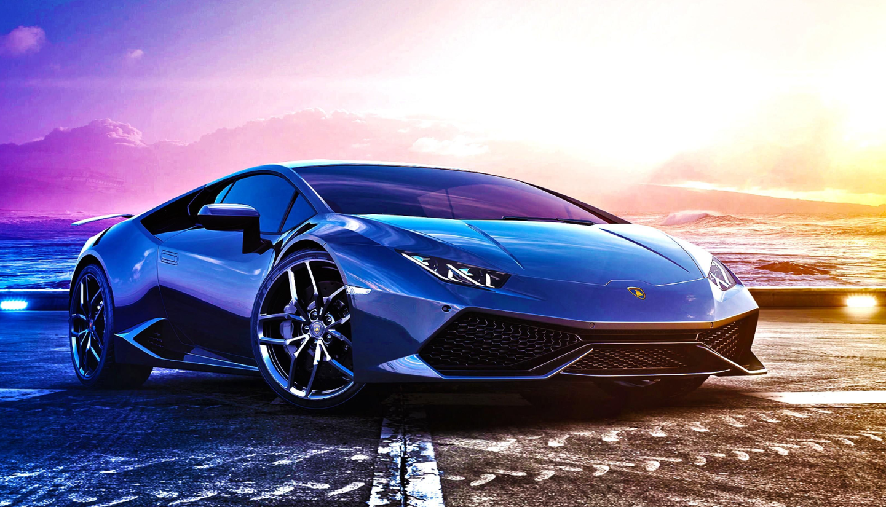

| name | img | description |
|---|---|---|
| Car |  |
Lamborghini engines are generally exclusive and are never used in other cars, which makes them even more alluring and appealing. Unique eye-catchy designs of Lamborghini make them recognisable from a distance. The meticulous design of these cars makes them visually innovative and stunning. |
| Yoga |
The word 'Yoga' is derived from the Sanskrit root 'Yuj', meaning 'to join' or 'to yoke' or 'to unite'. As per Yogic scriptures the practice of Yoga leads to the union of individual consciousness with that of the Universal Consciousness, indicating a perfect harmony between the mind and body, Man & Nature. |
|
| festival |
The festival celebrates Ganesha as the God of New Beginnings and the Remover of Obstacles as well as the god of wisdom and intelligence and is observed throughout India, especially in the states such as Maharashtra, Madhya Pradesh, Karnataka, Kerala, Telangana, Andhra Pradesh, Tamil Nadu and Goa. |
|
| Bike |
The Ninja bike, synonymous with speed and agility, epitomizes the essence of sleek and powerful design. Engineered for performance, this two-wheeled marvel seamlessly blends cutting-edge technology with a striking aesthetic. |